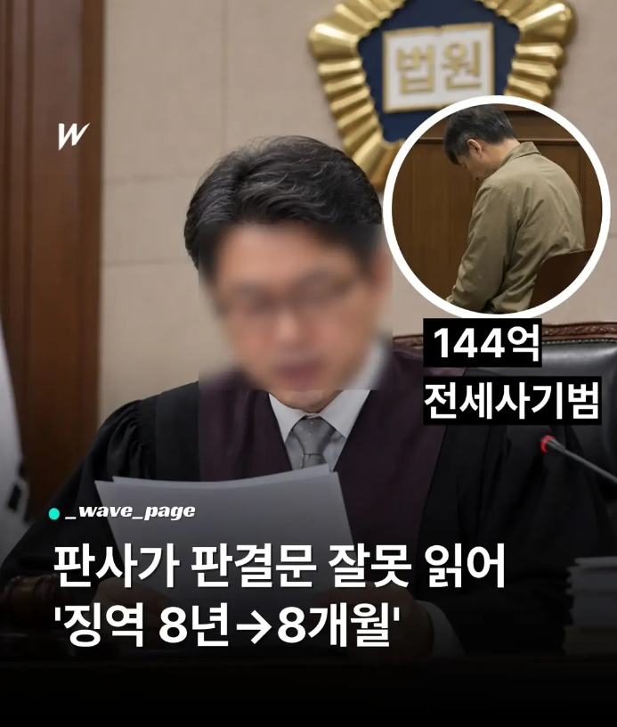

깡통맞잖아!!
그냥 1심에서 8년형 인정했으면 2심에서 자기 죄를 인정하고 반성하는 모습 보였다고 감형 받았을텐데
오히려 괘씸죄 걸려서 2심에서 8년 그대로 받았네
1심과 실질적으로 피해회복이나 그런면에서 달라진게 없으면 감형 안되는 게 정배긴 함
검사 거품 물었겠네
저런 판례는 왜 있던 거임?
저런 사례가 있기 때문
그래서 제도적으로 3심까지 있는거겠지.
진짜 잘못 읽은거야 아니면 일부러 잘못읽은거야?
어차피 상고하면 뒤집힐거라 일부러 잘못읽을 가능성은 없긴 함
ai가 판사 대체해야함 진짜 시급함
일부러 잘못 읽었다는 의심이 드는게 합리적이지 않냐 ㅋㅋㅋㅋ
하필 형량을 잘못 읽어?
2심 올라가면 100% 뒤집힐 사항이라 일부러 해서 얻을 이득이 없고 걍 실수라고 봄
일부로 잘못 읽을 이유가 있음?
3심제에서 1심이고 항소심에서 바뀔 가능성이 100%인데?
어차피 상고하면 무조건 뒤집히는데 뭐하러 일부러 잘못읽음
합리적이란 말을 참 악용하는구나
3심제가 왜 있고 항소가 왜 있겠냐
뭔 말도 안되는 소리를 합리적으로 포장을 하네
특히 대법원은 법률심인지라 형량을 새로 선고하는 경우가 거의 없어서인지는 몰라도 잘못 읽는 경우가 지금까지 단 한 번도 없었음
즉 어차피 고쳐질 판결임
일부러 잘못 읽었을 가능성 따윈 없다
에휴 무지성 판사 혐오 수준
통장까봐라
판사는 아무런 책임도 없는거지?
재판에서 사고 치면 정직 몇 개월 받은 사례는 있음.
정직보다 무거운 중징계는 불가능. 왜냐하면 법에 없어.
그 외엔 재임용에서 탈락할 가능성이 높아진 것 정도?
저런 치명적인 실수하면 판사도 인사고과에서 낮은점수받겠지
사람이 하는건디 실수야 할수있는거지
바로잡을 제도만 갖추고있으면 됨
검사가 항소한건디
"책임?"
이젠 보고 읽는 것조차 제대로 안 하는구나
사법부 <- 존재 자체가 대한민국에 백해무익함
걍 다 AI로 바꿔야함
네가 사법부에 가진 악감정의 기원이 뭔지는 모르겠지만
화난다고 일단 부수고 갈아치우는 폭도정신과 별로 다를게 없어
현 판사 다 죽여버렸으면. 음주운전자가 싹 처 밀어 죽여버렸으면 좋겠어 누구 제외 이런거 필요없음
너 부터 죽여야 세상이 좀 더 안전할듯
너부터가는게 나을듯 병신마냥 여기서글싸지르지말고
커뮤보고 또 뿔났네. 판사도 그냥 사람이고 공무원임
주변에 보면 그냥 이 사람도 공부만 잘한 한낱 인간일 뿐인거림.
물론 대중의 기대치가 높으니 저런 실수는 없으면 좋겠지만 소송이 워낙많아서 맨날 골무끼고 서류보고 있던데 한편으로는 좀 안타깝더라
ㅋㅋㅋ 줬다뺐기긴 하네
AI보다 뭐가나음?
걱정마
곧 모든분야에서 AI가 더 나아질텐데
너에게도 같은 질문 들어갈거임.
모두가 공평하게되는 새로운 세상
그 말이 아님
많은 사람들이 AI로 대체되고 있잖아
판사는 대체 안됐고
안되는 이유가 뭐냐는거임
AI모델이 얼마나 정확하고 환각이 있냐 없냐를 떠나서 프론티어 모델은 모두 미국 중국산인데
그걸 우리가 도입해서 쓴다는게 현실성이 있을까?
또한 판사는 판사 이전에 직업 공무원임.
직업 공무원은 법으로 보장받는 자리임. 이건 법 개정 및 대변환이 있기 전에는 불가능한 일이지
머나먼 미래에는 AI가 대체될 수도 있지. 하지만 이런 사법부 핵심인 판사를 왜 당장 대체 안하냐?는 어찌보면 국가 안보 및 국익에도 반할 수 있음. AI에 어떤 장난질 했는지 검증은 가능하고?
국산 AI 프론티어 모델이 나오고 해킹 등에 안전하며 로컬로 운용 가능해야 그때서야 제대로된 논의가 될거라고 봄.
단순히 생각해도 미국은 자국 프론티어모델 존나 뛰어나도 미국 판사 AI로 바뀌지는 않자나?
내 생각에는 당분간 내가 말한 조건을 갖춘 AI모델이 나오더라도 판사를 "보조"하는 선에서 계속 이어지지 않을까 싶음.
실수할수는 있는데 존나 고리타분한 법리적용이네
구두로 한게 서면보다 우선하니 뭐니..
시발 피곤하네
안그러면 문맹이나 시각장애인들한테 너무 불리해서 그렇지
어차피 취소에요잉~ 8년 땅땅!
나 곧 투룸 탈출해서 전세구하고싶은데 무서워서 전세 못하겟다 이거... 몇년동안 힘들게 모았는데 전세금 사기 당하면 진심 살자각 뜰것가틈... 아니면 최소 걍 인생난이도 극으로 올라가서 살기싫어질듯
저게 1심이 아니라 최종심이라면?
깡통으로 빨리 갈아 끼워져야해